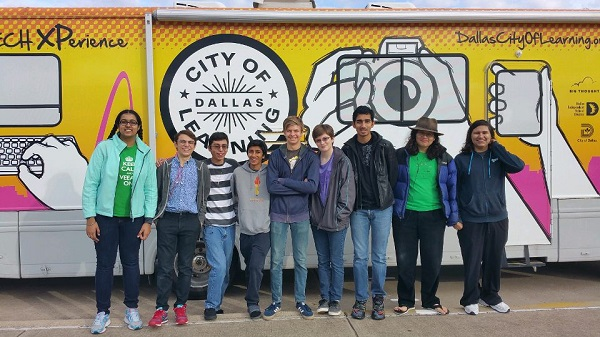

This year, to give our team a better chance of going to super-regionals for the first time, we decided to enter the Arkansas regional. We were actually pretty far ahead compared to our last seasons. We had a finished robot, a working autonomous, and good drivers.
To Arkansas pic.twitter.com/spvHb17vyo
— Iron Reign Robotics (@team6832) December 2, 2016
Upon arrival, we had to make some last minute changes to our robot in order to pass inspection, as it was too bumpy in the RV. So , we huddled in the school's band room and attached our side shields and team number, making it just in time for inspection. We set up our table for the competition as well.
Upon arriving to the hotel, we realized that we hadn't really practiced our presentation at all, so we had to hold a last minute session until 12. After that, a few team members fell asleep for the next day, but most boarded the RV and worked on the robot and autonomous until ~2 in the morning.
We woke up refreshed (totally), and went to the tournament. In order, we had: opening ceremony, the presentation, and then the four games. First, right before the presentation, we found that our robot, despite working the night before, now refused to accept any motor commands. This was due to the way our code handled controller events, so we had to change that last minute. Also, due to just having last minute practice in the presentation (and being tired), we didn't preform as well as we would have liked.
In the first match, we performed way better than we expected, and actually won the game. However, we discovered that our robot has a static issue due to the way the wheels slide, so we had to reboot it during the match. In the second match, we lost. This was partially due to the static issue and partially due to the fact that we were paired with an inexperienced team. We helped show them the ropes, however, and saw a lot of the origins of our team in them. We wish them the best and hope they can progress. In the third, fourth, and fifth match, we won all our matches, even though our static issue got worse. Our relatively consistent autonomous, paired with the beacon and ball scoring fared us well against our opponents. We need to build on these strengths, while also introducing end game flexibility with cap ball scoring.
We did not get picked for alliances, even though we were in 8th place with a 4-1 record. this was probably a knock on our scouting and relation building with the other teams. We'll make sure to build on that for future competitions.
We had issues at the tournament due to static and scouting issues. The scouting issue was particularly bad due to these reasons:
This tournament gave us valuable experience for the qualifiers we have coming up. We have now fixed the static and controller issues. We were also able to judge the progress of other teams and compare it to ours. By the time of the qualifier, we should have some advantages over the other teams.